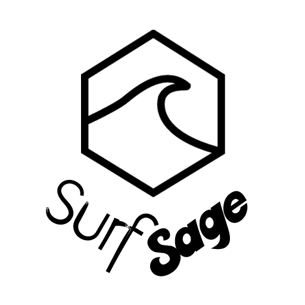

<ion-header no-border>
  <ion-navbar transparent>
    <ion-title>
    </ion-title>
  </ion-navbar>
</ion-header>

<ion-content padding class="wallpaper">
  <div id="logo" class="wraptocenter">
    
  </div>

  <button ion-button (click)="OpenSearchPage()">Add Location</button>

</ion-content>
